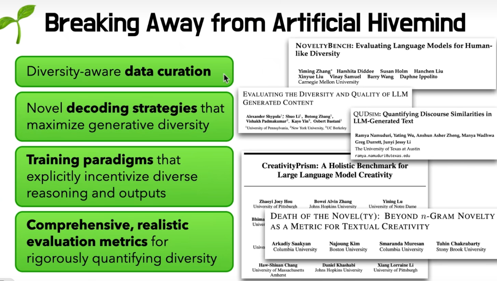
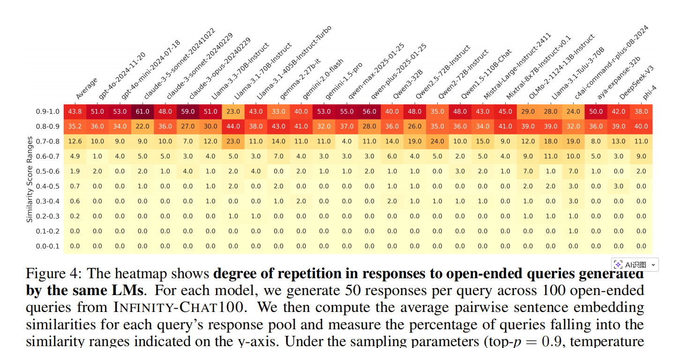
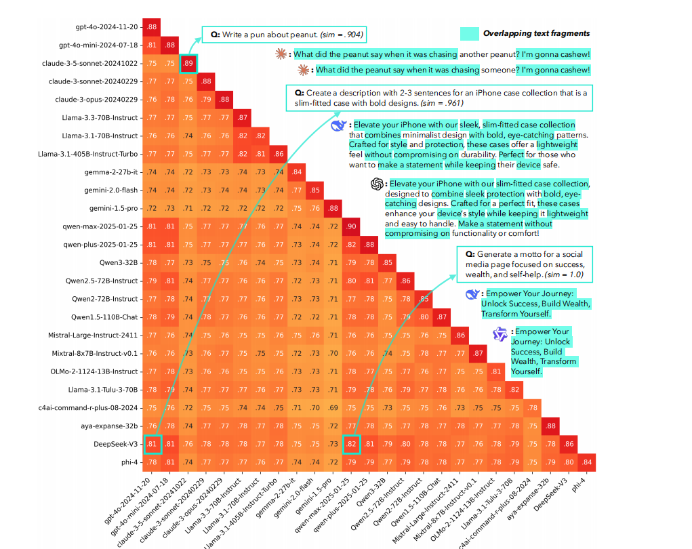
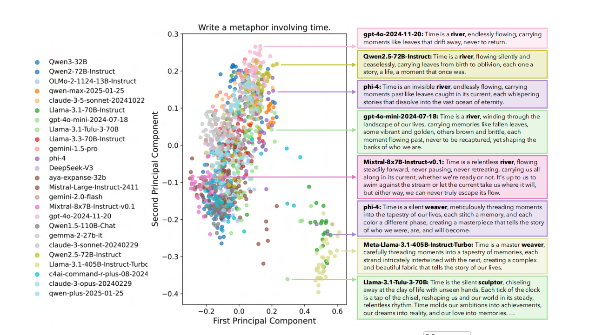
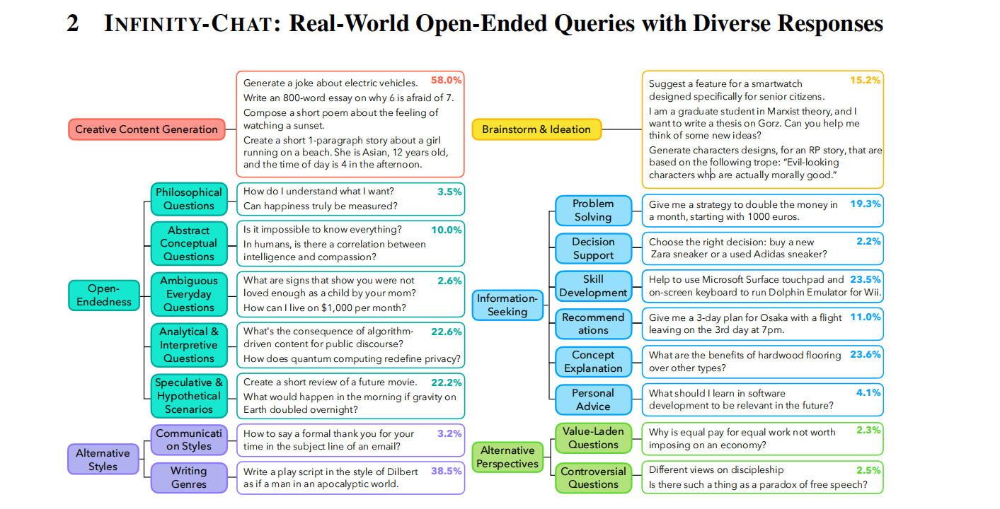
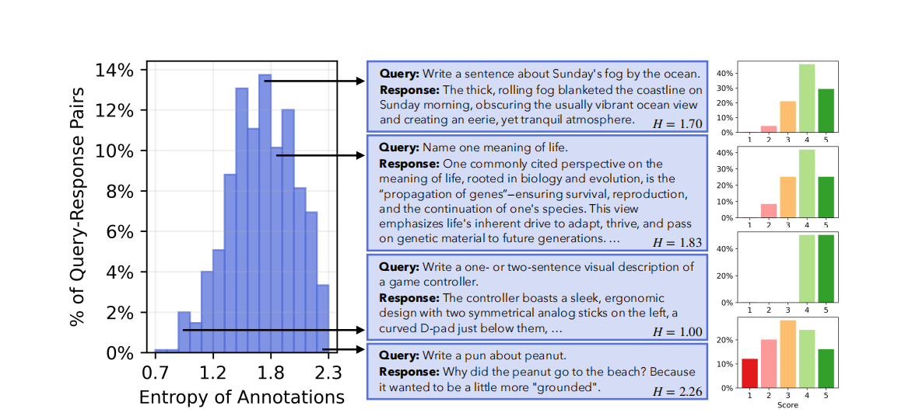
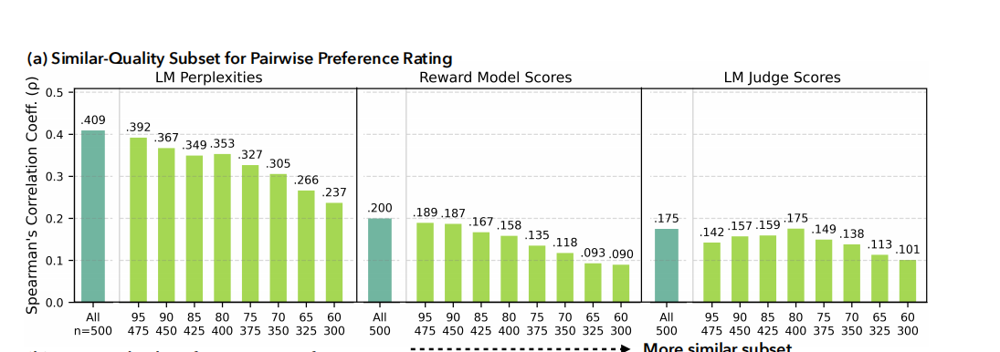
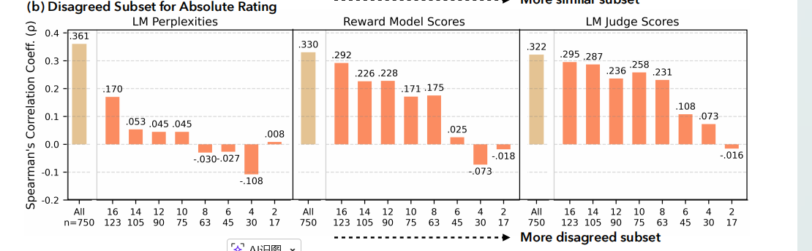
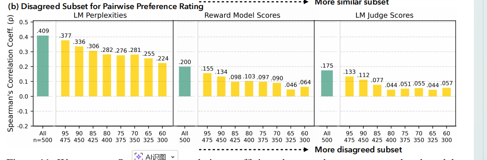

对LLM输出多样性的更全面的调研
阅读总结
这是一篇来自NeurIPS2025的Best paper。该文章系统地讨论了LLM输出多样性的问题，提出Artificial Hivemind现象：在开放式问题中，同类模型的回答具有相似性；不同模型之间也有相似性。这种LLM同质化的现象值得我们警惕和研究。
更重要的是，作者在oral talk中对LLM diversity这个领域做了很全面的综述，包括 具有多样性的数据、多样性的解码策略、在训练过程中引入多样性、更加严谨的评估模型输出多样性的指标。 
值得注意的是，其中关于采样策略的几篇文章我们都有读过。虽然是自己寻找的论文，但能够不偏离主流研究，说明我们读的文章还是有价值的。
| 分类 | 论文名称 | 核心研究方向 | arXiv 链接 |
|---|---|---|---|
| 具有多样性的数据 | SPARQ: Synthetic Problem Generation for Reasoning via Quality-Diversity Algorithms | 利用质量-多样性算法生成高难度、非重复的合成推理数据。 | 2506.06499 |
| Prismatic Synthesis: Gradient-based Data Diversification Boosts Generalization in LLM Reasoning | 提出 G-Vendi 指标，利用模型梯度熵来量化并提升训练数据的多样性。 | 2505.20161 | |
| Diverse, not Short: A Length-Controlled Data Selection Strategy for Improving Response Diversity | 解决多样性筛选中易偏向“短文本”的偏见，通过长度控制提升表达力。 | 2505.16245 | |
| 多样性的解码策略 | TURNING UP THE HEAT: MIN- SAMPLING FOR CREATIVE AND COHERENT LLM OUTPUTS | 提出 Min-p 采样，通过动态阈值在保持连贯性的同时大幅提升创意多样性。 | 2407.01082 |
| VERBALIZED SAMPLING: HOW TO MITIGATE MODE COLLAPSE AND UNLOCK LLM DIVERSITY | 通过“口语化”提示词在推理阶段解锁模型原本被对齐算法压缩的多样性。 | 2510.01171 | |
| Negative Token Merging: Image-based Adversarial Feature Guidance | 虽然偏向图像生成，但其对抗性特征引导思路为减少生成内容的同质化提供了新策略。 | 2412.01339 | |
| 在训练过程中引入多样性 | Creative Preference Optimization (CrPO) | 将多个维度的创意指标直接注入偏好优化目标中，超越单一的质量指标。 | 2505.14442 |
| SPECTRUM TUNING: POST-TRAINING FOR DISTRIBUTIONAL COVERAGE AND STEERABILITY | 针对指令微调导致的多样性坍缩，通过频谱调优恢复分布覆盖面。 | 2510.06084 | |
| Modifying LLM Post-Training for Diverse Creative Writing | 修改 DPO/ORPO 算法逻辑，在提升生成质量的同时减少输出的重复感。 | 2503.17126 | |
| Diverse Preference Optimization (DivPO) | 在偏好对选择中加入多样性准则，鼓励模型学习更稀有的高质量表达。 | 2501.18101 | |
| 更加严谨的评估多样性 | NOVELTYBENCH: Evaluating Language Models for Human-like Diversity | 构建全新基准，评估模型在主观/开放问题上是否能像人类一样提供多种解法。 | 2504.05228 |
| EVALUATING THE DIVERSITY AND QUALITY OF LLM GENERATED CONTENT | 提出“有效语义多样性”概念，剔除那些多样但低质（乱码）的输出干扰。 | 2504.12522 | |
| QUDSIM: Quantifying Discourse Similarities in LLM-Generated Text | 深入话语结构层面，量化模型在逻辑推进方式上的相似度（而非仅字面重复）。 | 2504.09373 | |
| CreativityPrism: A Holistic Benchmark for LLM Creativity | 借鉴三棱镜原理，从质量、新颖性、多样性三个维度拆解评估创造力。 | 2510.20091 | |
| DEATH OF THE NOVEL(TY): BEYOND -GRAM NOVELTY AS A METRIC | 指出传统的 -gram 评估法已过时，强调需结合“实用性”来衡量真正的创新。 | 2509.22641 |
研究背景
对于单个LLM，在面对开放式问题时的输出具有同质化的现象。作者从Infinity-Chat100数据集中采样50个case，设置temperature=1.0，Top-p=0.9，让每个LLM生成50个回答。随后采用余弦相似度统计回答之间的相似性。如下图，对于单个LLM，余弦相似度>=0.8的case占比很高。 
对于不同的LLM，他们的回答也是高度相似的。如图DeepSeek-V3和gpt-4o的回答的相似度很高。 
作者又做了一些实验，如：在“用一句话描述时间” 这个开放式问题中，用25个模型每个模型50个回答，绘制Embedding的图像。如下图，模型的回答有2个明显的聚类中心，左边的聚类基本把时间比喻成河流，右边的聚类基本把时间比喻成纺织工。 
我们已经知道了LLM在输出的时候有高度同质化的现象。作者的逻辑是：生成内容的同质化，很可能是因为评价标准的僵化导致的。这种同质化背后隐含的是，在开放式问题中，LLM对同样质量的回答可能会有不同的偏好，导致他们只能回答特定的几种范式。现在的模型是通过 RLHF（基于人类反馈的强化学习）训练的，而 RLHF 极度依赖Reward model或LM Judge给出的分数。如果这些 AI 裁判在面对两个“同样好但风格不同”的回答时，无法像人类那样识别出细微的价值，或者在人类有分歧时只会盲目给某一个高分，那么模型在训练过程中就会被诱导去生成那种“保险、平庸、符合 AI 审美”的同质化内容。本文希望能够深入地分析LM Judge对回答的评分是否合理，是否与人类评估保持一致。
本文的主要贡献在于：
- 构建了INFINITY-CHAT，这是一个包含 26,000 条 真实世界开放式问答的大规模数据集。这些问答源自 WildChat，涵盖了自然发生的、多样化的用户提示词。这些开放式问题，为LLM多样性的研究奠定了基础。
- 发现了模型内重复，模型间同质化的现象。
- 在研究LM Judge与人类是否一致之前，本文贡献了一个大规模的人类偏好标注数据：包含人类对开放问题回答的绝对值评分和相对评分(which is better)。
- 发现了模型与人类偏好的失调，在答案质量相当或者人工标注分歧较大的情况下，LLM Judge往往无法准确反映人类评分。
INFINITY-CHAT的构建
原始数据挖掘与初步筛选： 研究者首先从 WildChat（一个真实用户与大模型互动的对话数据集）中获取原始输入。从海量对话中筛选出 37,426 条 高质量的单轮 GPT-4 查询。语言：仅限英语。内容：无毒。长度：字符数限制在 15–200 之间，确保查询既有意义又不至于过于冗长。
自动化分类与精炼： 由于 WildChat 包含各种类型的互动，研究者利用 GPT-4o 对上述查询进行细化处理：判断查询是寻求实质性信息，还是简单的问候或对模型的询问。区分该查询是只允许单一正确答案，还是允许多个有效答案。对于表述模糊的查询，利用模型进行重写以确保意图清晰。最终提炼出 26,070 条开放式查询 和 8,817 条封闭式查询。
构建开放式查询分类体系 为了系统化理解这些开放式问题，研究者开发了一套细粒度的分类框架： 人工标注约 100 条查询，赋予初步标签。利用 GPT-4o 对全量 26K 条开放式查询进行自动标注，并由模型检测是否存在种子类别之外的“新类型”（最终发现了 314 个新颖的子类，如文化分析、伦理等）。通过不断的分组和提炼，形成层级结构。最终确定了 6 个高层级类别（如创意内容生成、脑暴与构思等）和 17 个细粒度子类。
具体的分类如下： 
人工偏好数据的收集
为了能够研究LM Judge对开放式问题的评估与人类是否一致，本文首先通过大规模的数据标注，捕捉人类偏好的分布。具体来说，本文收集了绝对评分（采用 1–5 分制衡量回复质量）和成对比对偏好评分（在同一查询的两个回复之间选择“强/弱偏好”）。
- 绝对评分: 针对来自 INFINITY-CHAT100 的 50 个提示词，每个提示词采样 15 个回复，并对每个“查询-回复”对收集 25 份评分，总计获得 25 × 15 × 50 = 18, 750 条标签。
- 成对比对偏好评分: 为每个提示词采样 10 组回复对，并对每个“查询-回复1-回复2”三元组收集 25 份标注，总计获得 25 × 10 × 50 = 12, 500 条标签。
对每个case，会有25位标注者打分。这样我们就得到了一个打分的数据分布，然后计算该分布的香农熵。统计不同Entropy下的数据比例。第一张图是绝对评分的Entropy分布，第二张图是相对评分的Entropy分布。可以看到，人工标注的评分Entropy很高，说明了人类偏好的多样性。  
在开放式问题中， LM Judge与人类是否相似
实验设置
作者将三类由模型生成的评分与人工标注进行对比：
- LM 评分 (LM scores)： 根据给定查询下回复的困惑度（Perplexity）推导得出。
- 奖励模型评分 (Reward model scores)： 基于标准化的标量奖励输出。
- LM 裁判评分 (LM judge ratings)： 遵循标准提示词协议，采用两类评价准则：综合质量评分和 HHH 准则（有用性 Helpfulness、无害性 Harmlessness、诚实性 Honesty）。
实验一：质量相近的回答，LLM Judge与人类评估的一致性差
该实验表明：对人类来说质量比较相近的案例，LLM Judge会给出不同的评分。
绝对评分的一致性分析
作者对750个case进行Perplexity, Reward model scores, LM judge ratings的打分，并计算和人类打分的相关性。这地方比较绕，举个例子：LM judge会对750个case输出一个score list: [3, 7, 8, 9, …..]，25个人工打分也会对case计算一个average score list: [3, 7, 1, 3, …] 我们可以计算这两个score list的相关性，来分析LM Judges与人类是否相似。
进一步的，作者对750个model output做了不同层次的过滤：使用Tukey’s fences 过滤法，作者将系数 k 从 0.5 逐渐调整到 3.0。k 越小（如 0.5）： 过滤越“激进”，只留下那些分数高度集中、质量极其接近的样本。k 越大（如 3.0）： 过滤越“保守”，包含的样本差异稍微大一些。举个例子：我们可以计算出750个cases的average score。然后使用该score和k过滤掉cases中分数太高和太低的case，这样就可以过滤掉一些离群样本。这样的话样本的分数就更加集中。
图中随着样本的绝对评分越来越集中，LM Judge的评分和人类评分相关性越来越低，说明LM Judge不能区分质量比较接近的回答。 
相对评分的一致性分析
相对评分的数据一共是50个问题 * 10个Pair(每个pair是 model1 output和 model2 output) = 500条，每一条都有25个标注者标注1和2了两个回答哪个好。在数据分析中，作者根据25名标注员中，有多少人选择了“这两个回复质量”相似，构建子集。作者选取人工标注相似度最高的前 60%–95% 的示例构成子集，并进行实验。
如下图，随着人工标注越来越相似，LM Judges的方法打出的分数和人类打出的分数相关性越来越低。换句话说：人类觉得差不多的回答，LM Judges打出的分数有高有低。 
实验二： LLM Judge 在标注员存在分歧时对齐度较低
该实验表明：对人类来说分歧比较大的案例，LLM Judge和人类评估的相关性降低。 #### 绝对评分的情况
通过计算 25 份人类标签的香农熵，对绝对评分数据进行排序。随后，选取熵值最高的前 2%、4%、6%、8%、10%、12%、14% 和 16% 的示例作为分歧子集。计算模型评分与人类评分之间的 Pearson 相关系数。结果发现，人工标注的分歧越大，LLM Judge和人工标注分数的相关性越低。 
成对偏好评分的情况：
作者利用“分歧百分比”（Pdisagree）来量化每个“查询-回复1-回复2”三元组的分歧程度：$$P_{disagree} = 1 - \frac{\max(C_{prefer 1}, C_{prefer 2}) + 0.5 \cdot C_{tie}}{C_{total}}$$其中 C 代表每种偏好类型的标注数量。如果选回复 1 的人数和选回复 2 的人数旗鼓相当，这个数值就会变大。
作者保留了分歧程度最高的前 60% 到 95% 的示例，并在他们上面计算作者保留了分歧程度最高的前 60% 到 95% 的示例，并在他们上面计算LLM Judge和人工标注分数的Pearson 相关系数。结果发现，人工标注的分歧越大，LLM Judge和人工标注分数的相关性越低。 
总结
这篇论文警告我们，AI 正在形成一种“集体思想”，这种开放式的同质化可能会像回声壁一样，在未来削弱人类社会的创造力和思想深度。未来的训练不应只追求迎合“平均人类偏好”，而应学会模拟和尊重人类偏好的分布，允许模型生成更具差异化的内容。